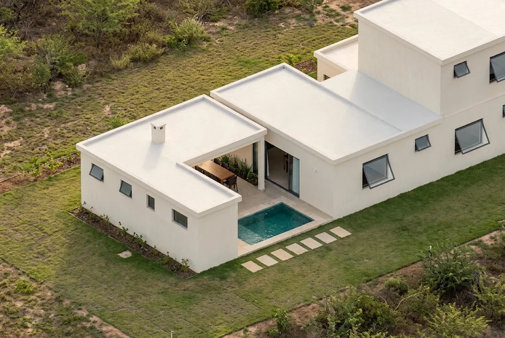
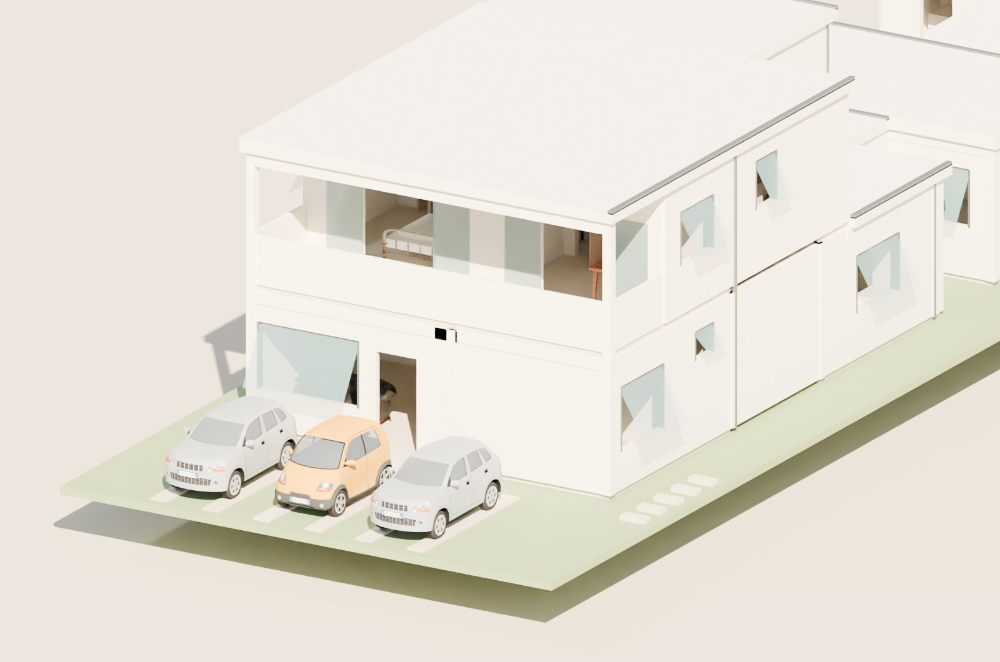
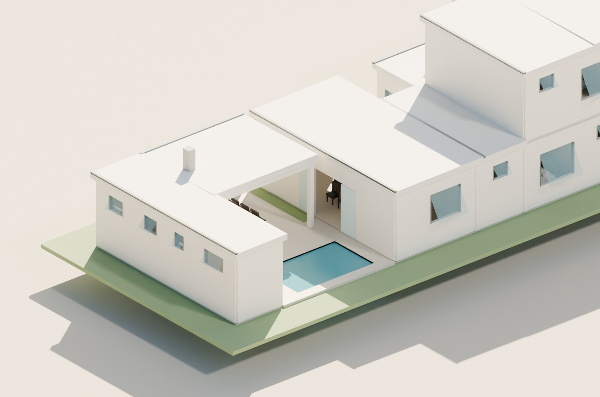
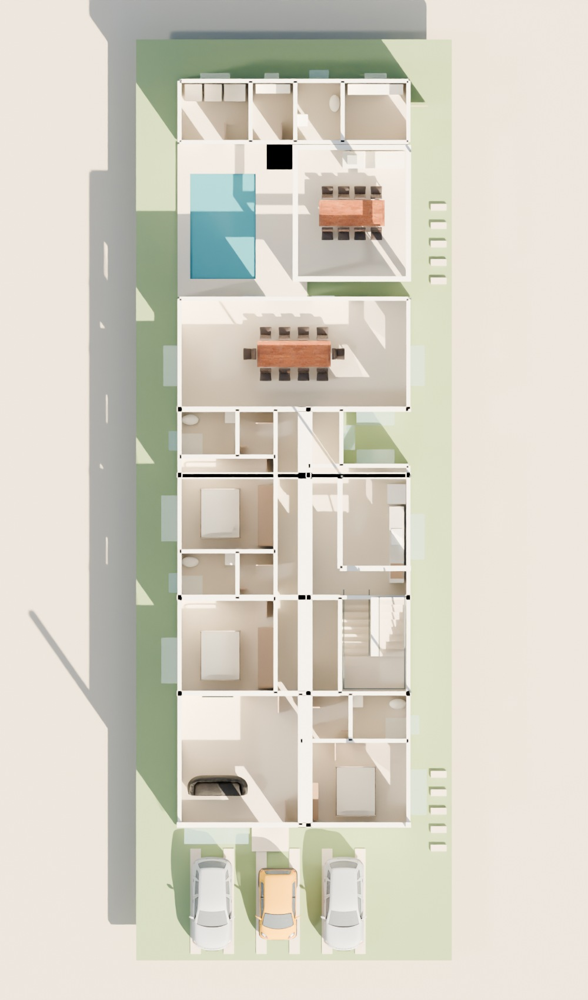
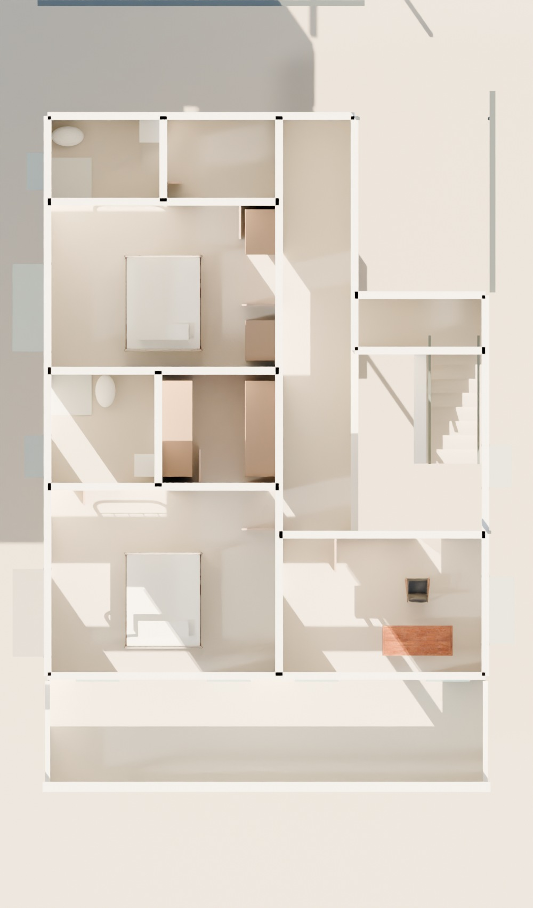
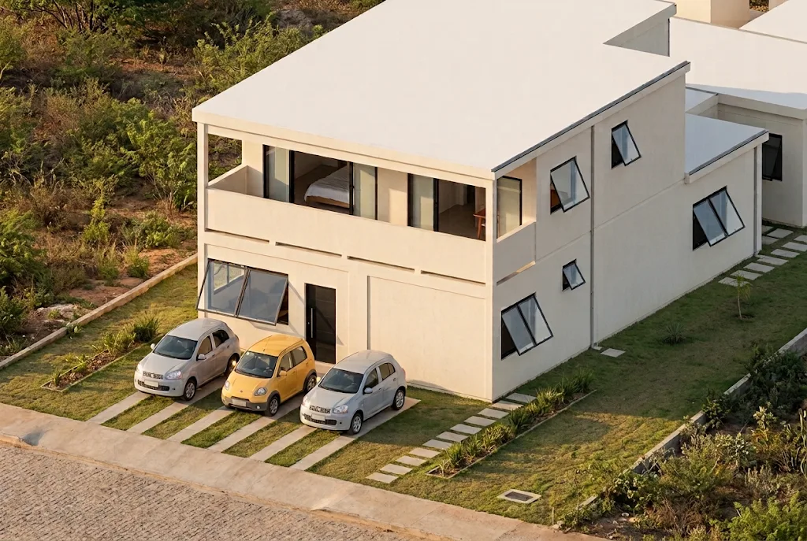

Intimidade sem isolamento.
Estar voltado para a rua; três quartos no térreo e dois no superior. Vestíbulos dão acesso aos banhos sem exigir a travessia de outro quarto. Master e escritório se abrem para a varanda frontal.
← Projetos 4 · 5 · 6 / Casa 4 · detalhamento
Cinco quartos, uma varanda voltada para a frente e o prazer de receber ao redor de uma piscina pequena. Uma casa que liga a rotina ao lazer, sem perder a privacidade.
Pedrinhas, Petrolina · lote 12 × 35 m
Estudo preliminar · IngeTrazo + Blender.

A maquete contém arquitetura, móveis, três veículos, portas e janelas na posição de estudo. Use os cortes por pavimento para conferir os acessos; a vista da escada mostra partida, patamar e desembarque.
Portas abertas e janelas projetadas para fora. Os cortes de visualização não são cortes construtivos; instalações e fixações não estão detalhadas.
A organização principal aprovada foi preservada. A revisão resolve a passagem junto à escada, cria um pátio aberto e concentra os serviços no fundo do lote.
Estar voltado para a rua; três quartos no térreo e dois no superior. Vestíbulos dão acesso aos banhos sem exigir a travessia de outro quarto. Master e escritório se abrem para a varanda frontal.
O acesso parte da cozinha/hall, no lado esquerdo do U; sobe ao patamar e retorna pelo lance direito. São 18 espelhos de 17,5 cm, pisos de 28 cm e proteções nas bordas abertas. A chegada conecta ao hall superior.
Gourmet com 10 lugares e quiosque com 8. A piscina de 10 m² ocupa o lado esquerdo; churrasqueira, pia, lavabo e apoio ficam próximos, com passagem livre entre os conjuntos. O bloco de serviço respeita a premissa de 1,50 m nos fundos.
Plantas humanizadas com cotas, móveis, giros, áreas úteis estimadas, norte e implantação. Clique para ampliar. As plantas foram diagramadas em A3, escala 1:100 quando impressas em tamanho real, sem ajuste de página.
Cotas principais entre eixos de paredes; quadro lateral indica dimensões internas livres típicas, descontando 15 cm de parede. Pilares podem produzir estreitamentos locais, indicados no memorial. O corte de escada é desenvolvido, não uma única seção física.
Renders produzidos no Blender a partir da revisão R1 do IngeTrazo. A piscina, as coberturas e os vãos correspondem à geometria disponibilizada no 3D. Materiais e ambiente externo são ilustrativos.




Geradas no Gemini pelo Chrome, usando os renders R1 como referência. Selecionadas para esta apresentação após comparação visual com os renders de referência. Texturas, paisagismo, posição/quantidade dos pisantes nas fotos e pequenos detalhes permanecem interpretações; a geometria de referência é o modelo 3D e as pranchas.

Estimativas geométricas do estudo. A área construída considera paredes e áreas cobertas; não equivale ao cálculo cadastral/licenciável. Não foram incluídas casas 05 ou 06 nesta entrega.
| Parâmetro | Proposta R1 | Critério |
|---|---|---|
| Térreo construído estimado | 216,82 m² | Inclui gourmet, quiosque e serviço |
| Superior construído estimado | 99,78 m² | Inclui varanda; exclui vazio da escada |
| Projeção estimada / ocupação | 216,82 m² / 51,62% | Estimativa dos pavimentos, não índice legal certificado |
| Solo natural conservador | 127,23 m² / 30,29% | Meta do briefing: 126 m² / 30%; margem 1,23 m² |
| Vagas de automóveis | 3 vagas de 2,50 × 5,00 m | Referência do briefing: 1 vaga / 150 m²; manobra na via não simulada |
| Piscina | 10 m² de água · profundidade de estudo 1,20 m | Piscina e pavimentação excluídas do solo natural |
| Pavimento / ambiente | Dimensões úteis típicas | Área útil estimada |
|---|---|---|
| Térreo · Estar e entrada | 4,45 × 4,85 m | 21,58 m² |
| Térreo · Quarto 1 | 3,95 × 3,05 m | 12,04 m² |
| Térreo · Vestíbulo 1 | 1,75 × 1,65 m | 2,88 m² |
| Térreo · Banho 1 | 2,05 × 1,65 m | 3,38 m² |
| Térreo · Quarto 2 | 3,50 × 3,45 m | 12,07 m² |
| Térreo · Banho 2 | 2,05 × 1,65 m | 3,38 m² |
| Térreo · Vestíbulo 2 | 1,30 × 1,65 m | 2,15 m² |
| Térreo · Quarto 3 | 3,50 × 3,45 m | 12,07 m² |
| Térreo · Banho 3 | 2,05 × 1,65 m | 3,38 m² |
| Térreo · Vestíbulo 3 | 1,30 × 1,65 m | 2,15 m² |
| Térreo · Circulação | 1,10 × 10,65 m | 11,70 m² |
| Térreo · Hall da escada | 1,05 × 3,50 m | 3,67 m² |
| Térreo · Escada em U | 2,45 × 3,50 m | 8,57 m² |
| Térreo · Cozinha | 3,65 × 4,85 m | 17,69 m² |
| Térreo · Ligação coberta ao gourmet | 1,10 × 2,00 m | 2,20 m² |
| Térreo · Gourmet de refeições | 8,55 × 4,05 m | 34,62 m² |
| Térreo · Quiosque e mesa | 4,15 × 4,85 m | 21,46 m² |
| Térreo · Lavabo externo | 1,65 × 2,18 m | 3,59 m² |
| Térreo · Apoio do quiosque | 2,35 × 2,18 m | 5,11 m² |
| Térreo · Lavanderia | 2,55 × 2,18 m | 5,55 m² |
| Térreo · Depósito | 1,55 × 2,18 m | 3,37 m² |
| Superior · Varanda frontal para o rio | 8,55 × 2,05 m | 19,12 m² |
| Superior · Quarto master | 4,45 × 3,60 m | 16,02 m² |
| Superior · Escritório | 3,95 × 2,65 m | 10,47 m² |
| Superior · Banho master | 2,05 × 2,15 m | 4,41 m² |
| Superior · Closet | 2,25 × 2,15 m | 4,84 m² |
| Superior · Quarto 5 | 4,45 × 3,20 m | 14,24 m² |
| Superior · Banho 5 | 2,15 × 1,55 m | 3,33 m² |
| Superior · Vestíbulo 5 | 2,15 × 1,55 m | 3,33 m² |
| Superior · Circulação superior | 1,35 × 8,15 m | 11,00 m² |
| Superior · Vão da escada | 2,45 × 3,50 m | 0,00 m² (vazio) |
| Superior · Chegada da escada | 2,45 × 0,95 m | 2,33 m² |
¹ Áreas arredondadas. O acesso lateral secundário é predominantemente gramado; não foi contado como rota pavimentada acessível. A margem de solo natural é pequena: novos pisos, muros ou equipamentos exigem refazer a conta.
Orientação adotada do briefing: frente ESE, azimute 115°, vento predominante vindo de SE, 135°. Norte e direção dos ventos estão representados nas pranchas. O estudo não substitui simulação térmica ou de iluminação.
A varanda sombreia a frente; beirais e coberturas claras reduzem a exposição direta. O pátio-jardim aberto aproxima luz e ar da cozinha e da ligação ao gourmet. Janelas dos quartos abrem para os afastamentos, com folhas projetadas para fora.
As grandes áreas voltadas ao poente merecem proteção solar e especificação térmica na próxima etapa. Banhos terão vidro translúcido e peitoril alto; iluminação e ventilação efetivas dependem da esquadria escolhida.
Quartos recebem camas de casal e armários de correr; o corredor principal tem cerca de 1,10 m livre, com estreitamentos locais junto aos pilares. A escada tem cerca de 0,92 m entre corrimãos. Os banhos são compactos e não foram projetados como banheiros acessíveis.
Lavanderia e depósito são funcionais, mas abaixo de uma faixa de conforto generosa. Para acessibilidade integral, ampliar circulação, portas e áreas de transferência exige outra compatibilização.
| Ambiente | Vão nominal | Referência de estudo | Observação |
|---|---|---|---|
| Estar e entrada | 3,75 m² | 3,60 m² | Área geométrica; ventilação efetiva a especificar. |
| Quarto 1 | 2,61 m² | 2,01 m² | Área geométrica; ventilação efetiva a especificar. |
| Banho 1 | 0,52 m² | 0,42 m² | Área geométrica; ventilação efetiva a especificar. |
| Quarto 2 | 2,61 m² | 2,01 m² | Área geométrica; ventilação efetiva a especificar. |
| Banho 2 | 0,52 m² | 0,42 m² | Área geométrica; ventilação efetiva a especificar. |
| Quarto 3 | 2,61 m² | 2,01 m² | Área geométrica; ventilação efetiva a especificar. |
| Banho 3 | 0,52 m² | 0,42 m² | Área geométrica; ventilação efetiva a especificar. |
| Lavabo externo | 0,52 m² | 0,45 m² | Área geométrica; ventilação efetiva a especificar. |
| Quarto master | 6,57 m² | 2,67 m² | Área geométrica; ventilação efetiva a especificar. |
| Escritório | 5,64 m² | 1,75 m² | Área geométrica; ventilação efetiva a especificar. |
| Banho master | 0,63 m² | 0,55 m² | Área geométrica; ventilação efetiva a especificar. |
| Quarto 5 | 2,61 m² | 2,37 m² | Área geométrica; ventilação efetiva a especificar. |
| Banho 5 | 0,52 m² | 0,42 m² | Área geométrica; ventilação efetiva a especificar. |
Ensaios geométricos e leitura das plantas/modelo. Foram corrigidos os problemas encontrados no escopo do estudo; os resultados não são um laudo nem uma garantia de ausência de falhas construtivas.
A piscina passou de 2,50 × 5,00 m para 2,50 × 4,00 m. Lavanderia, depósito, lavabo e apoio foram alinhados no fundo. A cobertura da cozinha foi completada; lajes, vigas e drenagem ganharam representação coerente.
O corredor principal foi ampliado; a ligação ao gourmet recebeu um pátio aberto ao lado. A escada agora tem lances fechados, patamar, prolongamentos de corrimãos e proteção das bordas. As janelas foram ampliadas e revistas para abertura externa.
As imagens e os modelos das demais casas foram preservados. Os pisantes da casa 4 foram afastados das janelas na revisão de publicação. O arquivo IGZ agora também contém móveis e carros em versões simplificadas, com texturas incorporadas.
O projeto mantém o briefing de 5 m na frente e 1,50 m nas laterais/fundos. A LC 034/2022 vincula os parâmetros à zona e ao número de pavimentos. A localização “Pedrinhas” não basta para determinar o enquadramento cadastral deste lote.
| Assunto | O que foi adotado | Conferência legal ainda necessária |
|---|---|---|
| Afastamentos | Faces construídas: frente 5,05 m; laterais 1,55 m; fundos 1,50 m | LC 034/2022, art. 141 e Anexo 13-A. Beirais seguem regra específica. |
| Atenção à Zona de Transição 02 | Não foi presumido que o lote seja ZT2 | Se o lote for ZT2, o art. 148 exige 10 m na frente e 3 m nas laterais/fundos para até dois pavimentos: esta implantação precisará ser revista. |
| Apoio junto à divisa | Foi concentrado no fundo, mas sem encostar no limite | Encostar não é autorização genérica: depende de zona, aberturas, uso, limites de altura e condomínio. Artigos 146–152. |
| Aberturas para divisas | Paredes com janelas afastadas do limite | Art. 152 prevê distância mínima de 1,50 m onde houver abertura; avaliar também o regime civil aplicável. |
| Solo natural e vagas | 30% de solo natural e 1 vaga / 150 m² como referências do briefing | Confirmar índices e critérios de cálculo vigentes para o lote e regulamento do condomínio. |
Pesquisa revisitada em 13/11/2026. Base documental: Diário Oficial municipal, edição 2.960, 31/05/2022, páginas 44–47; consulta ao texto republicado. A pesquisa não produziu certidão urbanística, confirmação de todos os atos supervenientes ou autorização condominial.
Arquivos editáveis, pranchas e registro das decisões. A apresentação R1 está separada das três propostas existentes e do trabalho paralelo do Claude.
Modelo de arquitetura construído com a biblioteca do IngeTrazo; composição e render no Blender 4.5.16. Móveis: Poly Haven, CC0. Veículos: Scopia, CC BY 3.0, disponibilizados no acervo Sweet Home 3D. Redimensionamento e simplificação: ver créditos do pacote.